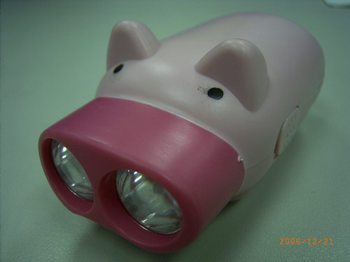
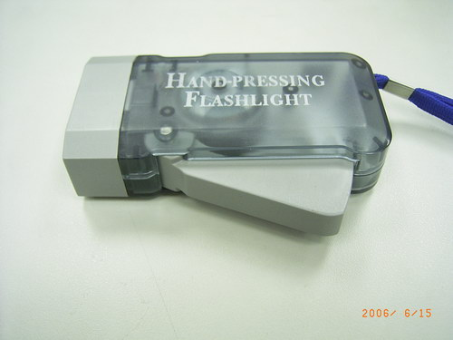
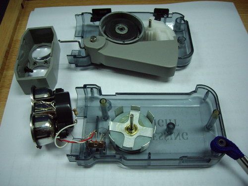
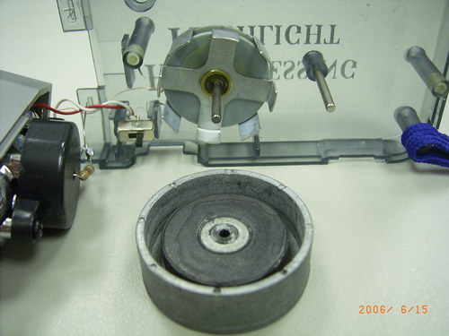
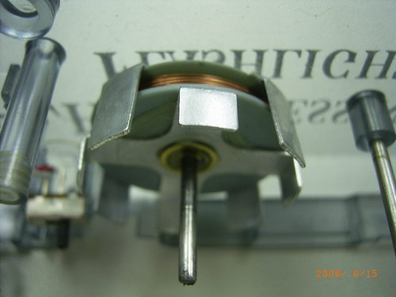
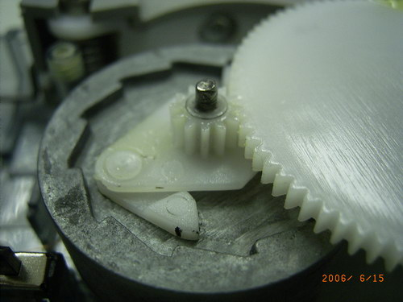
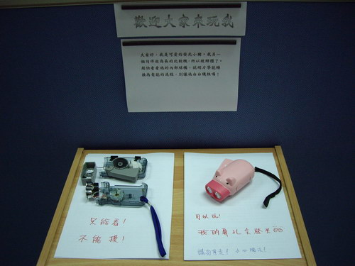
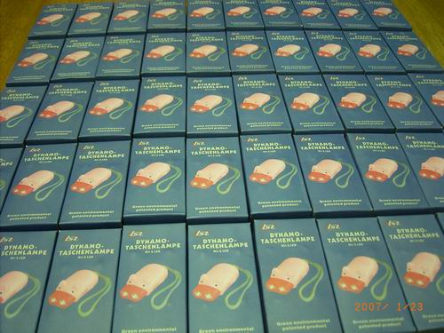

↑ 手壓手電筒發光的影片。

↑我是一隻可愛的手壓手電筒，按我就會發光喔！

↑這是我的同伴，也是手壓手電筒。

↑因為我的同伴長的比較醜，所以被解體了，可以看到他裡頭的構造。

↑這是用來發電用的磁鐵與線圈，觀察下一張照片，你能說出這個磁鐵
的磁極排列方式嗎？

↑線圈部位特寫，長的像城牆一般的金屬是很容易被磁化的鐵片，想一想，
鐵片是幹麻用的呢？

↑磁鐵背面，讓磁鐵只能單向旋轉的齒輪組。

↑我和被解體的同伴一起被展示出來的照片。

↑小豬手電筒是網路上買的，一次買了好多和同事一同分享。